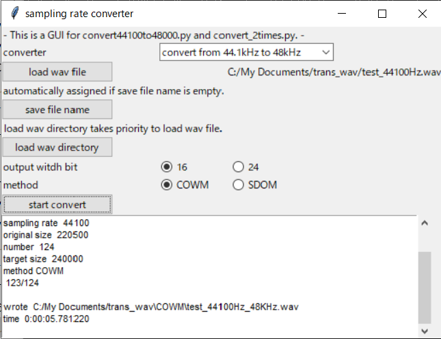

Converter audio wav file sampling rate from 44.1kH to 48kHz/96kHz and sampling rate to 2 times by FFT method.
Specify input wav file name as -i and output wav file name as -o. Or, specify input wav directory as -d.
Following are examples.
convert from 44.1kHz to 48KHz
python convert44100to48000.py -i sample_wav/test_44100Hz.wav -o sample_wav/test_48000Hz.wav
convert from 44.1kHz to 96KHz
python convert44100to48000.py -i sample_wav/test_44100Hz.wav -o sample_wav/test_96000Hz.wav -f 2
convert from 44.1kHz to 96KHz 24bit width
python convert44100to48000.py -i sample_wav/test_44100Hz.wav -o sample_wav/test_96000Hz_24bit.wav -f 2 -b 24
convert input wav directory files to 48KHz
python convert44100to48000.py -d sample_wav
convert sampling rate to 2 times
python convert_2times.py -i sample_wav/test_44100Hz.wav -o sample_wav/test_88200Hz.wav
convert sampling rate to 2 times 24bit width
python convert_2times.py -i sample_wav/test_44100Hz.wav -o sample_wav/test_88200Hz_24bit.wav -b 24
A GUI to convert
python gui_sampling_rate_converter.py

There are two method how to combine overlap portion from short-time inverse-FFT output.
One is window similar to Hann window (COWM). Another is simple linear cross (SDOM).
SDOM is more jitter than COWM.
The method can be specified as -m. Default is COWM.
MIT